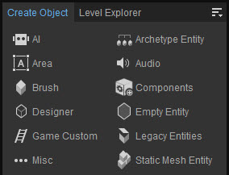

Overview
This tool gives the access to all the object types that can be created within CRYENGINE Sandbox, whether they are assets that are imported from other software or made within the Editor itself, such as the entities created in the Designer tool.
The Create Object tool is shown in the Sandbox interface by default, but can also be found in Tools → Level Editor → Create Object.

Menu
The Menu can be accessed via the 
Toolbars
Option | Description | ||||
|---|---|---|---|---|---|
Customize... | Opens the toolbar customization window allowing users to customize existing toolbars, and/or create new toolbars within this tool. | ||||
Lock Toolbars | When disabled, the positions of toolbars and spacers within this tool can be changed by drag and drop. | ||||
Spacers | The following options allow users to use spacers in positioning their toolbars.
The Spacers menu options are only available when Toolbars → Lock Toolbars is disabled. | ||||
| Toolbars | Lists all default and custom toolbars (if any) created for this tool, allowing users to select which toolbar they'd like to hide or display. |
When a tool has a toolbar, whether this is a default one or a custom one, the options above are also available when right-clicking in the toolbar area (only when a toolbar is already displayed).
Help
Opens the documentation page for this tool.
Create Object Tool Elements
See the pages below for more information about the various different objects.